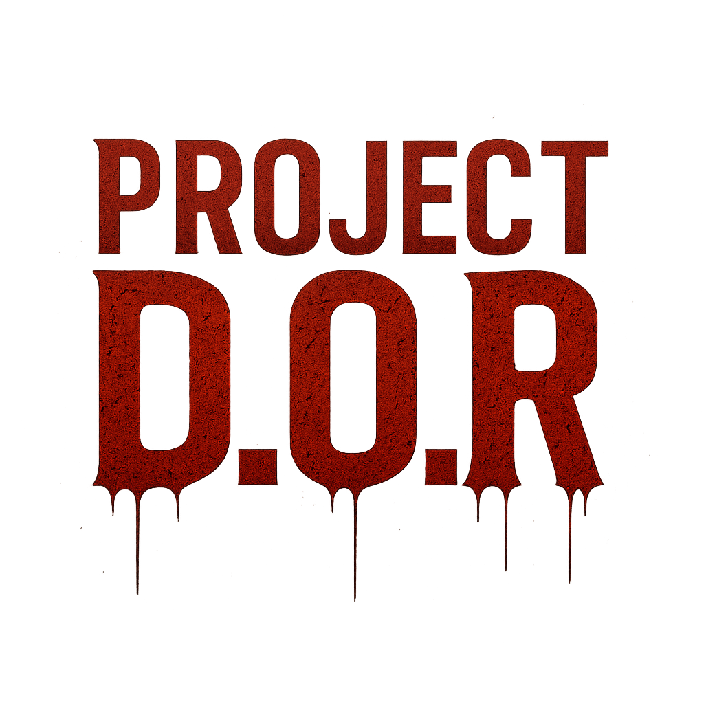

Memuat sistem deteksi tangan...

Gunakan gesture tangan untuk navigasi:
- Kepalan tangan untuk Play
- Telapak tangan terbuka untuk How to Play
- Jempol ke atas untuk Credit
Status: Memulai kamera...